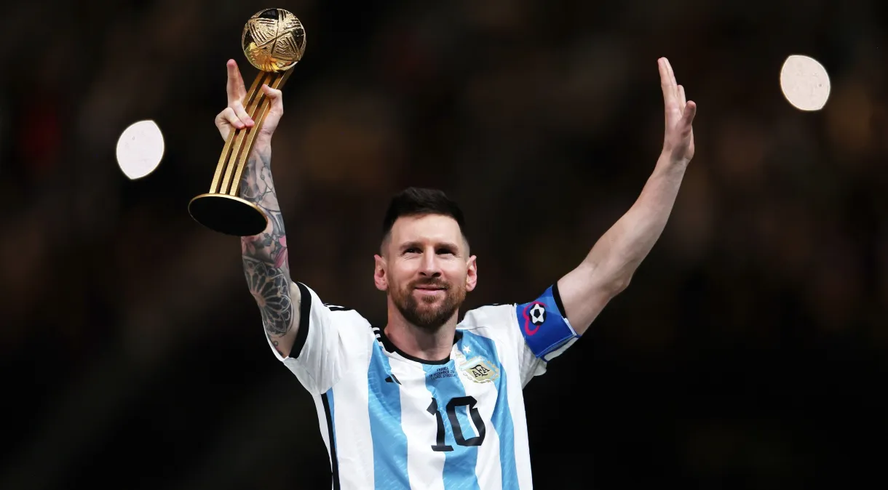
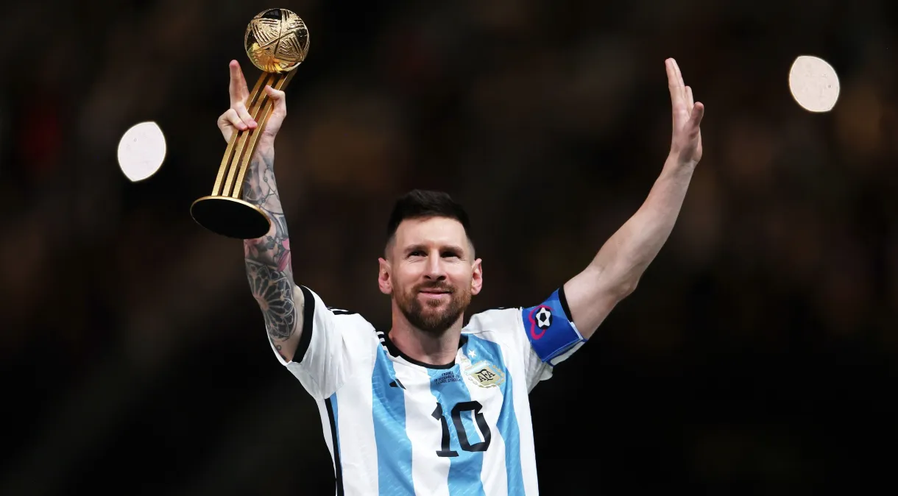

Conquistas
- 6 vezes vencedor da Bola de Ouro da FIFA
- 10 vezes campeão da La Liga com o Barcelona
- 4 vezes vencedor da Liga dos Campeões da UEFA
- Maior artilheiro da história do Barcelona
- Recordista de gols em um ano civil
Lionel Messi, nascido em 24 de junho de 1987, é um jogador de futebol argentino que atua como atacante. Ele é considerado um dos melhores jogadores de todos os tempos.
Messi começou sua carreira no Barcelona, onde se destacou e conquistou inúmeros títulos, incluindo a Liga dos Campeões da UEFA e vários títulos da La Liga.


 
